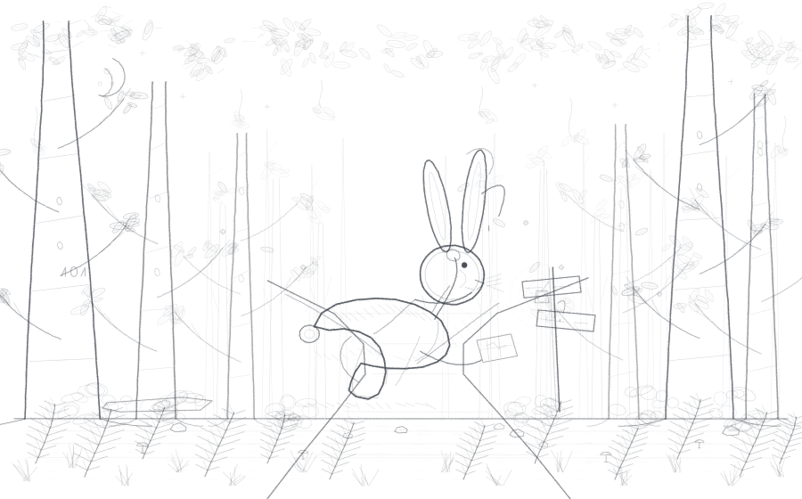

404
You're off the path.
This page is not in this part of the forest. The rabbit checked the map twice, looked down both forks, and is still not sure which way it came from.

404
This page is not in this part of the forest. The rabbit checked the map twice, looked down both forks, and is still not sure which way it came from.
